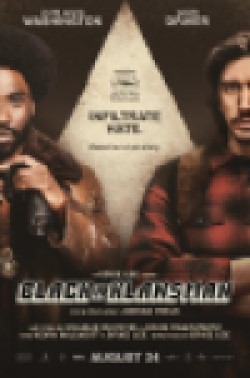
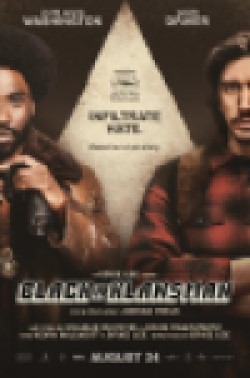

The traumatised memory has stayed with her, although she has never spoken about it, and being back at this cursed place makes her jittery and on edge.
On the beach, they are reunited with a somewhat jaded white couple, the Tylers (Elisabeth Moss and Tim Heidecker), who annoy Gabe by showing off about
being just that little bit richer. Their cabin is flashier, his car is a cooler model than Gabe’s and their rented boat seems in better shape. (Gabe’s
is called “Craw Daddy”; the Tylers’ is toe-curlingly called “B’Yacht’ch”.) And so Adelaide and Gabe’s compromised family happiness, with its tingling
undertow of material and personal disquiet, is shattered one night when they see a group of four people standing in their driveway, a group which seems
eerily familiar.
Igitmpostor syndrome is something that afflicts people who have fought their way up to a position of some prestige, while never quite being able to suppress the feeling that they don’t deserve it, that they are just fakes, and that they are taking up a space that should be filled by someone more deserving. Is that partly what Us is about: a whole nation of people who each feel a shadow of historical rebuke behind them? Or perhaps the impostors are coming back to grab everything back, having just been deposed? The demonic invaders seem to be attacking from below and at the height of the horror and mayhem, Gabe and Adelaide briefly discuss the possibility of escaping to Mexico, before deciding they are much better off where they are. Perhaps if America was in dispute with Canada, we would be getting a zeitgeisty horror-thriller about Americans getting attacked from above.
...
...
...
...
 
